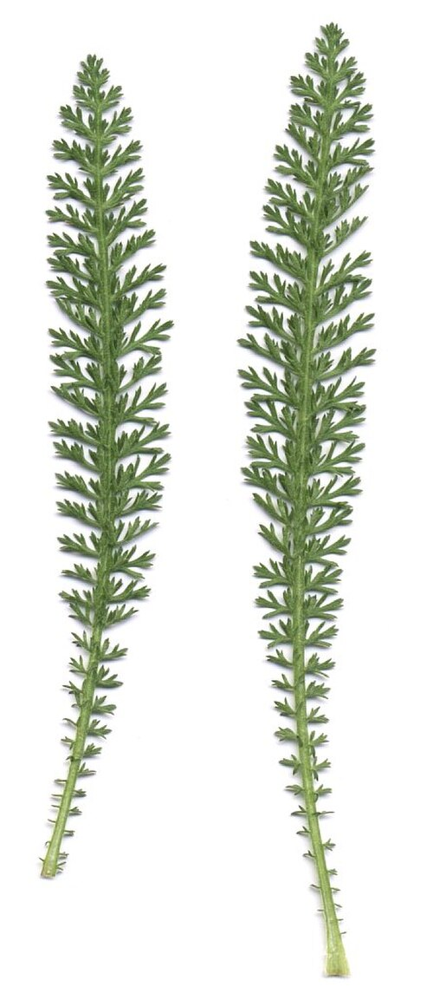
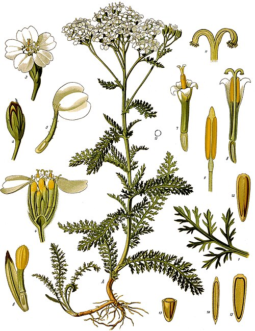

Krwawnik pospolity
Achillea millefolium · rodzina astrowate (Asteraceae) · „tysiąclistnik"



Występowanie
Cała Polska, pospolity
Wysokość
20–80 cm
Kwitnienie
VI – X
Zbiór
VII – VIII (pełnia kwitnienia)
Surowiec
Ziele kwitnące (szczyty)
Smak
Gorzki, aromatyczny
Opis i występowanie
Bylina z aromatycznym zielem. Liście pierzasto-podzielone na bardzo wąskie, nitkowate odcinki — stąd nazwa „tysiąclistnik" (millefolium). Łodyga wzniesiona, w górze rozgałęziona, zakończona płaskim baldachogronem z drobnych białych (rzadko różowych) koszyczków kwiatowych.
Rośnie na łąkach, pastwiskach, miedzach, przydrożach, ugorach — wszędzie tam, gdzie suchawo i słonecznie. Bardzo wytrzymały na suszę i deptanie.
Skład
| Składnik | Działanie |
|---|---|
| Olejek eteryczny (z chamazulenem!) | Przeciwzapalne, przeciwbakteryjne |
| Flawonoidy (apigenina, luteolina) | Rozkurczowe, antyoksydacyjne |
| Achilleina (glikoalkaloid) | Hamuje krwawienia |
| Garbniki, gorycze | Ściągające, trawienne |
| Kwasy organiczne (jabłkowy, mrówkowy) | Antyseptyczne |
| Kumaryny | Rozkurczowe naczyń |
Na co pomaga
- Krwawienia — z nosa, dróg rodnych, hemoroidów, drobne rany. Nazwa „krwawnik" mówi sama za siebie.
- Bolesne i obfite miesiączki — reguluje cykl, łagodzi skurcze (klasyczne ziele kobiece).
- Zaburzenia trawienia — brak apetytu, niestrawność, wzdęcia, kolka.
- Wątroba i woreczek — żółciopędne, wspomaga oczyszczanie.
- Hemoroidy — nasiadówki z odwaru.
- Skóra problematyczna — okłady na trudno gojące się rany, owrzodzenia.
- Stany zapalne — gardła, jamy ustnej, dróg moczowych.
- Pocenie się nóg — kąpiele stóp.
Zbiór i suszenie
- Kiedy: pełnia kwitnienia (lipiec-sierpień), w słoneczne dni po obeschnięciu rosy.
- Jak: ścinaj górne 15-20 cm pędu — kwiaty i liście. Ostrym sekatorem.
- Suszenie: w cieniu, w pęczkach związanych łodygami i powieszonych głowami w dół. Max 40°C.
- Przechowywanie: w szczelnych słoikach, 12 mies. Mocno aromatyczne — nie z innymi ziołami.
Przepisy
🍵 Napar (na trawienie i kobiece dolegliwości)
- Łyżkę ziela zalej szklanką wrzątku.
- Przykryj, parzy 10-15 min.
- Pij 2× dziennie po posiłku (trawienie) lub kuracja 10 dni przed miesiączką (regulacja).
🌿 Sok ze świeżego ziela (silne działanie)
- Świeże kwitnące szczyty umyj, zmiksuj z odrobiną wody.
- Przeciśnij przez gazę.
- Pij łyżeczkę 2-3× dziennie z miodem (sok jest bardzo gorzki).
- Zewnętrznie: nakładaj na rany, owrzodzenia jako kompres.
🍶 Nalewka krwawnikowa
- Susz włóż do słoika, zalej alkoholem.
- Maceruj 4 tygodnie w ciemnym miejscu.
- Przecedź, przelej do butelek z ciemnego szkła.
- Pij 20 kropli z wodą przed posiłkiem — na trawienie i poprawę apetytu.
🛁 Nasiadówka na hemoroidy
- 3 łyżki ziela zalej 1 l wrzątku, parzy 15 min.
- Przecedź, wlej do miednicy z 4 l ciepłej wody.
- Nasiadówka 15-20 min, codziennie wieczorem przez 1-2 tygodnie.
- Można też stosować jako okłady (gaza nasączona naparem).
👃 Krwawienie z nosa — natychmiastowa pomoc
- Zerwij świeży listek krwawnika (jak najmłodszy).
- Ugnieć lub zwiń w rulonik.
- Włóż do nozdrza, z którego leci krew.
- Krwawienie ustaje w 2-5 minut.
💡 To stara ludowa metoda — działa również przy drobnych skaleczeniach palca: zmiażdż liść i przyłóż.
✓ Zalety
- Skuteczny przy krwawieniach — w polu może być ratunkiem
- Klasyczne ziele kobiece — bolesne miesiączki, regulacja cyklu
- Wszechstronne działanie trawienne, żółciopędne
- Łatwy do znalezienia i rozpoznania (pierzaste liście, baldach)
- Łączy się z innymi ziołami (rumianek, mięta)
- Można suszyć w pęczkach — łatwe przechowanie
✗ Wady i przeciwwskazania
- Ciąża — nie stosować! Może powodować skurcze macicy
- Alergia na rośliny astrowate (rumianek, mniszek)
- Może powodować fotouczulenie (kontaktowe zapalenie skóry)
- Długie stosowanie → bóle głowy, zawroty
- Smak bardzo gorzki — trudno wypić bez miodu
- Interakcje z lekami przeciwkrzepliwymi (warfaryna)
- Może obniżać ciśnienie krwi
⚠ Krwawnik różowy (Achillea millefolium f. rosea, dawnej Achillea roseoalba) — odmiana ozdobna, ten sam skład, można używać identycznie.
Ciekawostki
- Nazwa rodzaju Achillea pochodzi od Achillesa — według mitologii poznał właściwości rośliny od kentaura Chirona i leczył nią rany żołnierzy pod Troją.
- W I i II wojnie światowej żołnierze nosili krwawnik w apteczkach polowych — zatrzymywał krwawienia z ran.
- Ludowo zwany „dziadek", „leniec", „macierzanka miedziana".
- Pszczoły uwielbiają krwawnik — silnie miododajny. Miód krwawnikowy ma intensywny smak.
- Krwawnik wzmacnia inne rośliny w ogrodzie — sadź obok warzyw, poprawia ich zdrowie i smak.